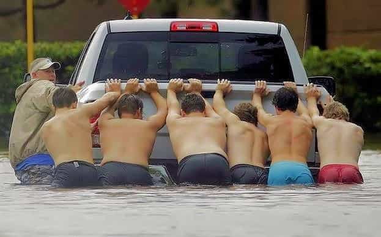

It’s said that Abraham Lincoln once asked some people how many legs a horse would have if you called its tail a leg. They answered five. Abe corrected their foolishness by pointing out that you can call the tail anything you want, horses still have only four legs.
Today’s pop culture now says that women are the same as men. That women are best able to lead because… whatever the babble of the day is. And men are brute beasts who only rule because they are bigger than women. And there are no differences between men and women except some easily changed plumbing details.
They can say whatever they want but the fact still remains that men and women are very different and were created for very different roles. If you want a wonderful and long relationship with your woman, you need to understand these differences and how they play out in the real world. Here are a few important ones.
1. Leadership
Let’s look at leadership first. Everyone knows you can’t herd cats. Cats aren’t herd animals. They don’t stick together and they won’t go where you want. But you can easily control groups of cats and take them wherever you want. The next time you’re in cat country, open a can of cat food or grab an old fish and walk down the road. You got cats. Lot’s of cats. Underfoot and fighting each other but going right where you want.
The take-away is this: you don’t drive your woman, you lead her. She wants you to lead and she will follow you. Women are like that. They were created that way.
2. Emotional Needs
She doesn’t want to hang out with a bunch of women nearly as much as she wants to cuddle with you.
Women need to be protected, loved and cared for and they will look to their man for this. That’s you! That’s your role if you want your women to follow you. Provide her what she needs and lead her. Just don’t be trying to drive her.
3. Teamwork

Men aren’t herd animals—we’re team players. There’s a big difference. When a bunch of guys find themselves in a bad situation, they automatically begin working as a team. They’ll recognize and follow a qualified leader, discuss and listen, divide up the tasks, work together, and get the job done, usually without shouting, arguing, complaining or slacking off. When there’s a job to do, men work together and do it. That’s how we make a living.
Women will also work together but they tend to take a long time and usually end up being either over-organized or under-organized. They don’t just naturally work together as a team like men do, but they do one-to-one really well. Women easily form strong emotional bonds with individual persons, such as a BFF or husband. They also bond with their children. This makes women ideally suited for forming and caring for their families.
So men, your women wants and needs to form a strong emotional bond with you. She knows how to do this. So give her what she needs, then lead. She will follow.
4. Mental Ability
Now let’s shove our pride under a rock for a while and consider memory. It’s my considered opinion that men and women are more or less equally smart. We’re good at different things but overall men and women start out about equally good at thinking. But men end up out-thinking women in the long run because our deficiency in memory forces us to be thinking all the time.
Women don’t have to think like that. They remember everything! Birthdays, anniversaries, your clothing sizes, appointments, specific conversations… they are remembering machines. They don’t have to think a lot. They remember what worked the last time and do it again. Women are really good at sticking with what works and doing the same thing over and over again.
We can’t do that. We have to figure it out again. And often come up with different solutions. Think about the many times you’ve been around an older married couple and he can’t remember something simple, like what kind of margarine they buy. She gently reminds him.
Then they get in the car and he drives. Driving is more than remembering. You have to be looking out and making decisions. You have to be thinking. As soon as you start zoning out and following the lines, you’ll get honked at and cussed at, by the guy driving the other car. Driving requires thinking, and men are really good at it. Because we’ve been forced to think all of our lives.
Conclusion
All of these differences between men and women aren’t based on some stuffy academic research. Nobody’s going to grant me a degree for figuring this out. You can see it all around you if you just open your eyes and see.
Men and women were created different, and we’re good at different things.
Nowhere in my Bible does it say that men should be the head of the family; it simply acknowledges that men are the head of the family. Men lead, women follow… and often pick up the pieces. Men think, women know… or think they do. Women want to be loved, protected and provided for, and men must love, protect and provide for them.
Read Next: Women Skipping Work For A Day Taught Everyone How Important Men Are